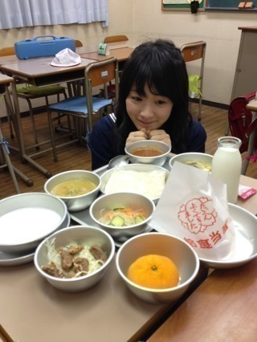
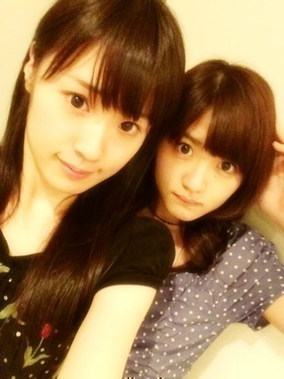

2013/0527Mon（´-`）.｡oO(か ずみん×171
今日もお疲れ様です(T_T)
目の下が真っ青ですが
元気は有り余ってるわ！(陶酔)
今日はプリンシパルの思い出し稽古
の前に、私の大好きな仕事、
"昭和にアメイジング"の取材が
ありました♪
今回も楽しかった！！ガジで！
いつも楽しんでます(*∩ω∩)
名画座行ったり、エポック社に
行ったり...( *´艸｀)
再来週から4週にわたって記事に
なります！
応募者プレゼント
めっちゃ豪華で大きいよ(*ﾟﾛﾟ)!!
そして！
次回もゲストがいますよっ！
誰かな〜♪ヒントは歌とダンスが
めっちゃうまくて
関西弁のあの人( ∩ˇωˇ∩)♡
お楽しみに☆

写メは前回の
昭和にアメイジングの時の！
給食美味しかったなぁ...
給食当番は嫌いでした(´･ｪ･｀)
食器と残飯の片付け
大変だったんだよね(T_T)
久しぶりに食べれて
幸せでした( ∩ˇωˇ∩)
それでは、
明日も頑張ります〜！！

みゅうみゅうが丁度今
一緒に撮ってくれました(σ´∀｀)σ
thanks☆
みなさんが
毎日enjoyできますように...( ´ ▽ ` )ﾉ
2013/05/27 23:54
コメント(430)
かずみん(((^_^;)
へーベルハウス(((^_^;)
へーベルハウス(((^_^;)
プリンシパル大阪公演行けないけど頑張ってー( •ᄌ• )
乃木どこみたよー
くしゃみかわいかったね！！
つぎは、成功するように頑張ってね
かずみーん!
プリンシパルお稽古お疲れ様(*´∇｀)ﾉ
体調には気を付けてね。
プリンシパルお稽古お疲れ様(*´∇｀)ﾉ
体調には気を付けてね。
かずみんおつかれさまです！
プリンシパルの練習再開するね！かずみさんの男役を大阪でも発揮してください！！
あと自己紹介も期待してます笑
頑張って下さい！
給食ぶちうまそーじゃん！！
おれも食いてーよー(((o(*ﾟ▽ﾟ*)o)))
よし！
明日もがんばれ（≧∇≦）
おれも食いてーよー(((o(*ﾟ▽ﾟ*)o)))
よし！
明日もがんばれ（≧∇≦）
今日もお疲れ様！
僕も給食食べるのは好きだったwww
片付けしてると昼休み削られるのがすんごい嫌だったな(⌒-⌒; )
かずみん好きな給食とかあった？？？
なす
ガジ頑張って下さい！*\(^o^)/*
自分も大学頑張ります(￣^￣)ゞ
自分も大学頑張ります(￣^￣)ゞ
美味しそう！
みゅうみゅうって言うメンバー久しぶりな気がする
みゅうみゅうって言うメンバー久しぶりな気がする
明日もポジティブ＼(^^)／
稽古お疲れ様♪
かずみんお疲れ！！
もう少しでプリンシパルの大阪公演なんだねー！！
ついこの間に東京公演終わった！！っていうブログ観たのに、時が経つのは早いなー(T . T)笑
また忙しくなりそうだけど体調だけにはくれぐれも気をつけてね(^O^)／
今日はこの辺で！！
おやすみなさい*\(^o^)/*
もう少しでプリンシパルの大阪公演なんだねー！！
ついこの間に東京公演終わった！！っていうブログ観たのに、時が経つのは早いなー(T . T)笑
また忙しくなりそうだけど体調だけにはくれぐれも気をつけてね(^O^)／
今日はこの辺で！！
おやすみなさい*\(^o^)/*
かずみん！！！
大阪公演いくからねー(((o(*ﾟ▽ﾟ*)o)))
おれのピンクハットに注目じゃー！！笑
大阪公演いくからねー(((o(*ﾟ▽ﾟ*)o)))
おれのピンクハットに注目じゃー！！笑
かずみんヤッホー(o・・o)/
給食、、、美味そうやん
思いだし稽古やったんやね
もう金曜やもんな
ガジ楽しみや
ほなねﾉｼ
給食、、、美味そうやん
思いだし稽古やったんやね
もう金曜やもんな
ガジ楽しみや
ほなねﾉｼ
昨日の乃木どこで、かずみんのくしゃみ話題になってたね。ヘーベルハウスちゃうかったから少し残念やったわ。
昭和にアメイジングも充実してたみたいで良かったね。大阪のプリンシパル公演見に行かれへんけど、応援してんで！
ポジティブに楽しくね
昭和にアメイジングも充実してたみたいで良かったね。大阪のプリンシパル公演見に行かれへんけど、応援してんで！
ポジティブに楽しくね
ん～～～～～smileまる。
昭和にアメイジング？？？？
もっと詳しく聞かせてくれないかな。
なんでしょうか。気になる。
毎日enjoyできるようにかずみんの何気ない瞬間の報告楽しみにしようかな(^^♪
昭和にアメイジング？？？？
もっと詳しく聞かせてくれないかな。
なんでしょうか。気になる。
毎日enjoyできるようにかずみんの何気ない瞬間の報告楽しみにしようかな(^^♪
かずみん応援してるね！
かずみん今日も一日おつかれさまー( ´ ▽ ` )ﾉ
かずみん写メかわいい（≧∇≦）
てか、乃木どこのクシャミのやつまじ笑ったんだけどwwやべぇかずみんちょーおもしれーーみたいな(笑)
そんじゃまたねー♪( ´▽｀)
かずみん写メかわいい（≧∇≦）
てか、乃木どこのクシャミのやつまじ笑ったんだけどwwやべぇかずみんちょーおもしれーーみたいな(笑)
そんじゃまたねー♪( ´▽｀)
かずみん(^o^)/
お疲れさまですm(__)m
仲良い友達が推しだから、初コメしてみました(⌒‐⌒)
昨日の乃木どこは、何だか何時もより元気無かった気がしたけど、気のせいかな!?
これからも、頑張ってね("⌒∇⌒")
お疲れさまですm(__)m
仲良い友達が推しだから、初コメしてみました(⌒‐⌒)
昨日の乃木どこは、何だか何時もより元気無かった気がしたけど、気のせいかな!?
これからも、頑張ってね("⌒∇⌒")
かずみんこんばんは＊
お仕事お疲れ様～♪
今は6枚目シングル作成中だから忙しいよねっ!!
無理しないでかずみんらしく頑張ってッ!!
いつまでも応援してるよ～ッッッ
ポジティブSAY!
お仕事お疲れ様～♪
今は6枚目シングル作成中だから忙しいよねっ!!
無理しないでかずみんらしく頑張ってッ!!
いつまでも応援してるよ～ッッッ
ポジティブSAY!
今晩は☆
もうすぐプリンシパルの大阪公演だね(^-^)稽古頑張ってp(^-^)q
昨日の乃木どこ？も面白かったよ♪来週もかずみんに何かが起こるみたいで楽しみにしてるよ＼(^o^)／
もうすぐプリンシパルの大阪公演だね(^-^)稽古頑張ってp(^-^)q
昨日の乃木どこ？も面白かったよ♪来週もかずみんに何かが起こるみたいで楽しみにしてるよ＼(^o^)／
かずみーーーーーん！！！！
いよいよ大阪に向けての準備が始まったみたいだね！！
東京同様でかずみんの演技には期待してるんで
稽古頑張ってね！！！
かずみんと給食って似合うね！！
でも給食当番は嫌いだったんだｗｗｗ
確かに週替わりにくる感じは面倒だったよね！？
hayatoはできるだけ配るのを避けてましたｗｗｗ
次回のゲストはろってぃーカナ！？
ってことで
hayatoでした♪
いよいよ大阪に向けての準備が始まったみたいだね！！
東京同様でかずみんの演技には期待してるんで
稽古頑張ってね！！！
かずみんと給食って似合うね！！
でも給食当番は嫌いだったんだｗｗｗ
確かに週替わりにくる感じは面倒だったよね！？
hayatoはできるだけ配るのを避けてましたｗｗｗ
次回のゲストはろってぃーカナ！？
ってことで
hayatoでした♪
お疲れさま(*^_^*)
体調には気をつけてね(´・ω・｀)
かずみんが
毎日enjoyできますように...( ´ ▽ ` )ﾉ
体調には気をつけてね(´・ω・｀)
かずみんが
毎日enjoyできますように...( ´ ▽ ` )ﾉ
こんばんは、かずみん。
昭和給食ですか？
ちょうど世代ですね～
アゲパンとソフトメンが懐かしいです。
かずみんは好きな給食は何でしたか？
昭和給食ですか？
ちょうど世代ですね～
アゲパンとソフトメンが懐かしいです。
かずみんは好きな給食は何でしたか？
かずみん♪
こんばんは☆彡
握手会では、胸元のバラが目印！
名古屋の「すかたん＠重陽の節句」です。
目の下が真っ青って寝不足ですか？
それでも元気が有り余っているのはランナーズ・ハイかも(笑)
お仕事、お疲れ様♪
あまり無理しないように身体も休めてね（＾－＾）
次回のゲストはろってぃーですかな？
給食は今思い出しても美味しかった記憶があるよね
ちなみに、かずみんは給食の献立は何が一番好きでした？
自分は、ソフトメンにカレー、冷凍ミカン
そして牛乳にミルメークがベストでした（＾◇＾）
プリンシパル大阪公演ももうすぐ♪
全５公演観に行くからね♪
舞台楽しみにしているから、かずみん自身も舞台楽しんでね♪
かずみんが楽しい毎日が送れますように♪
それでは、今回はこの辺で♪
こんばんは☆彡
握手会では、胸元のバラが目印！
名古屋の「すかたん＠重陽の節句」です。
目の下が真っ青って寝不足ですか？
それでも元気が有り余っているのはランナーズ・ハイかも(笑)
お仕事、お疲れ様♪
あまり無理しないように身体も休めてね（＾－＾）
次回のゲストはろってぃーですかな？
給食は今思い出しても美味しかった記憶があるよね
ちなみに、かずみんは給食の献立は何が一番好きでした？
自分は、ソフトメンにカレー、冷凍ミカン
そして牛乳にミルメークがベストでした（＾◇＾）
プリンシパル大阪公演ももうすぐ♪
全５公演観に行くからね♪
舞台楽しみにしているから、かずみん自身も舞台楽しんでね♪
かずみんが楽しい毎日が送れますように♪
それでは、今回はこの辺で♪
かずみん乃木どこ？でやっぱり学んだね！
すげーーよみやすくなってる！
さすがかずみんだわ～～～
関西弁のあの人とまさにろって○ーだね！
かずみんこれからも頑張ってね！
ずっとおうえんしてるから！

すげーーよみやすくなってる！
さすがかずみんだわ～～～
関西弁のあの人とまさにろって○ーだね！
かずみんこれからも頑張ってね！
ずっとおうえんしてるから！
小学校時代は
給食じゃなかったけど
中学は、袖ヶ浦で寮生活してたよ
豆乳飲んだり、玄米食べたり
菜食で、今考えると健康的な生活してて
良かったと思う
給食じゃなかったけど
中学は、袖ヶ浦で寮生活してたよ
豆乳飲んだり、玄米食べたり
菜食で、今考えると健康的な生活してて
良かったと思う
僕です。
オレオレオ
握手回
オレオレオレオコールよろすく。
オレオレオ
握手回
オレオレオレオコールよろすく。
お疲れ様！！
昭和にアメイジング見れないよ.......
応募者プレゼントほしいなーｗ
給食だーーｗｗ懐かしい！！
俺も食べたいなー
ではー♪
昭和にアメイジング見れないよ.......
応募者プレゼントほしいなーｗ
給食だーーｗｗ懐かしい！！
俺も食べたいなー
ではー♪
かずみんこんばんは！
扁桃炎で高熱なう(笑)
昭和にアメイジング＼(^o^)／楽しみにしてるよー(￣∇￣)
たまーにかずみんとタメのおれが知ってるのに何故かずみんが知らないんだってのがあるけど(笑)
ヒント簡単すぎ(笑)
ろっ…
だよね(笑)
明日も頑張ってね(｀･ω･´)
扁桃炎で高熱なう(笑)
昭和にアメイジング＼(^o^)／楽しみにしてるよー(￣∇￣)
たまーにかずみんとタメのおれが知ってるのに何故かずみんが知らないんだってのがあるけど(笑)
ヒント簡単すぎ(笑)
ろっ…
だよね(笑)
明日も頑張ってね(｀･ω･´)
おつかれさまです。
給食、懐かしいですね。毎日献立の内容に一喜一憂してました～苦手なものも結構あった（笑）
プリンシパル、大阪まで1週間きりましたね‼大変だとは思いますが頑張って下さい。応援してます。
大阪公演楽しみにしてます。
給食、懐かしいですね。毎日献立の内容に一喜一憂してました～苦手なものも結構あった（笑）
プリンシパル、大阪まで1週間きりましたね‼大変だとは思いますが頑張って下さい。応援してます。
大阪公演楽しみにしてます。
かずみさんお疲れさま。
給食懐かしいー。
ココアパウダーとか飲みたいな。
エポック社とか懐かしい。
プリンシパル稽古大変だね。
千秋楽行くからね。
花、知り合いとホワイトハイ様宛で出しといた。
本名だけどわかるかな？探してみてね。
早くかずみさんに会いたいわ
給食懐かしいー。
ココアパウダーとか飲みたいな。
エポック社とか懐かしい。
プリンシパル稽古大変だね。
千秋楽行くからね。
花、知り合いとホワイトハイ様宛で出しといた。
本名だけどわかるかな？探してみてね。
早くかずみさんに会いたいわ
かずみんお疲れー(^-^)/
昔テレビで
給食が食べれるお店を
紹介してたんだけど、
どこだったかなぁ…。
数十年ぶりに
食べてみたいなぁ(´∇｀)♪
昔テレビで
給食が食べれるお店を
紹介してたんだけど、
どこだったかなぁ…。
数十年ぶりに
食べてみたいなぁ(´∇｀)♪
かずみんいつもお疲れ様ですo(^_^)o
大阪プリンシパル楽しみだわ〜(o^∇^o)ﾉ
給食懐かしいね(；´･ω･)
もう給食が懐かしいと思う歳になってしまった…｡ﾟ(PД｀q｡)ﾟ｡
では明日もポジティブにガジ頑張りましょうo(^_^)oバーい(・ω・)ノ
大阪プリンシパル楽しみだわ〜(o^∇^o)ﾉ
給食懐かしいね(；´･ω･)
もう給食が懐かしいと思う歳になってしまった…｡ﾟ(PД｀q｡)ﾟ｡
では明日もポジティブにガジ頑張りましょうo(^_^)oバーい(・ω・)ノ
やあやあ( ´ ▽ ` )ﾉ
久しぶり(笑)
プリンシパ梅田千秋楽行けるようになったよ！(^-^)
今から楽しみ♪
アメイジング取材いいねー(・∀・)
あんまりよくわかんないけど(笑)
とりま明日も頑張ってこー！
かずみーん(￣^￣)ゞ
大阪公演ほんまに楽しみにしてます(o^^o)
握手会結構空くから今回のプリンシパル行けんかったら死んでまう（笑）
野球の試合と重ならんように祈っててください(￣^￣)ゞお願いします！
おやすみです(o^^o)
かずみんも今日1日お疲れ(*^_^*)
給食食べれていいなぁ～！！
あまり無理せずお仕事頑張ってね(^_^)/
今週はＢＬＴカレンダーの写真がかずみんで、毎日ウキウキしています♪
ブログと関係のないコメントでゴメン
毎日お疲れさま
ではまた～
ブログと関係のないコメントでゴメン
毎日お疲れさま
ではまた～
久しぶりに給食食べたい笑
梅田プリンシパル行くよー！！
楽しみ(((o(*ﾟ▽ﾟ*)o)))
こんばんは はしもーです
はしもーです
かずみんお疲れさま
大丈夫？あんまり無理しないでね
プリンシパルの思い出し稽古か
もうそろそろ梅田で始まるしね
昭和にアメイジング
4週にわたって記事になるんだ
これは楽しみだ
給食懐かしいな
そう 当番は大変なんだよね
当番は大変なんだよね
短いコメですが・・・
明日も頑張っていこう
写メ可愛い
ではでは
はしもー
かずみんお疲れさま
大丈夫？あんまり無理しないでね
プリンシパルの思い出し稽古か
もうそろそろ梅田で始まるしね
昭和にアメイジング
4週にわたって記事になるんだ
これは楽しみだ
給食懐かしいな
そう
短いコメですが・・・
明日も頑張っていこう
写メ可愛い
ではでは
はしもー
おつかれ坂でーす(･ω･ゝ
エポック社！？(･∀･)
野球盤だったりして(^◇^;)
歌とダンスが上手い関西人！？(･ω･)
ろってぃーかな(･∀･)
明日も頑張ってねーヽ(^o^)丿
また来まぁしゅ(･ω･ゝ
エポック社！？(･∀･)
野球盤だったりして(^◇^;)
歌とダンスが上手い関西人！？(･ω･)
ろってぃーかな(･∀･)
明日も頑張ってねーヽ(^o^)丿
また来まぁしゅ(･ω･ゝ
かずみん、こんばんは〜￣O￣)ﾉｵﾊｰ
昨日の乃木どこ見たよ！！
かずみんのくしゃみ ...ヘーベルハウッ！！ ...じゃなかったね(笑)Σヾ(＞ω＜=)Σヾ(＞ω＜=)Σヾ(＞ω＜=)
もう、めっちゃおもしろ過ぎて腹筋痛かった！！
いつか、ヘーベルハウッ聞きた〜い(*￣ﾟ￣)/･(笑)
昭和にアメイジング、いいよねー！！
なんか、給食久しぶりにめっちゃ食べたくなった〜ヾ(≧∇≦*)/
ゲストは、ろってぃーだねε===(っ≧ω≦)っ
めっちゃ楽しみ〜！！
じゃあ、かずみん今日もお仕事お疲れ様！！
明日も頑張ってね(o・・o)/~
かずみんのこと、ずっと応援してるよー＼(^o^)／
ポジティブSAY！！
昨日の乃木どこ見たよ！！
かずみんのくしゃみ ...ヘーベルハウッ！！ ...じゃなかったね(笑)Σヾ(＞ω＜=)Σヾ(＞ω＜=)Σヾ(＞ω＜=)
もう、めっちゃおもしろ過ぎて腹筋痛かった！！
いつか、ヘーベルハウッ聞きた〜い(*￣ﾟ￣)/･(笑)
昭和にアメイジング、いいよねー！！
なんか、給食久しぶりにめっちゃ食べたくなった〜ヾ(≧∇≦*)/
ゲストは、ろってぃーだねε===(っ≧ω≦)っ
めっちゃ楽しみ〜！！
じゃあ、かずみん今日もお仕事お疲れ様！！
明日も頑張ってね(o・・o)/~
かずみんのこと、ずっと応援してるよー＼(^o^)／
ポジティブSAY！！
お疲れ様です
そう言えばもうすぐプリンシパルの大阪公演ですね！
自分は行けませんが、一実さんがさらに飛躍出来るのを願ってます
昭和にアメイジング
いいじゃないですか！(￣▽￣)
チェックしますね
最近忙しくて番組とかあまり見れてませんが心のなかで応援してます
ではまた
P.S.夏にライブやってほしいなー
そう言えばもうすぐプリンシパルの大阪公演ですね！
自分は行けませんが、一実さんがさらに飛躍出来るのを願ってます
昭和にアメイジング
いいじゃないですか！(￣▽￣)
チェックしますね
最近忙しくて番組とかあまり見れてませんが心のなかで応援してます
ではまた
P.S.夏にライブやってほしいなー
お疲れ様です。
また稽古が始まったみたいですね。
大阪公演初日のチケットを何とかとりました。
結果３日とも見に行きますので頑張ってくださいませ。
給食は嫌いでしたねー。美味しくないし。もう食べたくないかな。
一番好きなのはアセロラゼリーでした。手作りじゃない。
それではまた次回。
また稽古が始まったみたいですね。
大阪公演初日のチケットを何とかとりました。
結果３日とも見に行きますので頑張ってくださいませ。
給食は嫌いでしたねー。美味しくないし。もう食べたくないかな。
一番好きなのはアセロラゼリーでした。手作りじゃない。
それではまた次回。
お疲れ―ぃっす。
東大アイドル同好会のいずみですー。
お仕事いろいろあって
大変だと思うけど
楽しんでやってね。
それが一番。
気温差が激しい時期だから
体調に気を付けて。
では
東京大学アイドル同好会
いずみ
東大アイドル同好会のいずみですー。
お仕事いろいろあって
大変だと思うけど
楽しんでやってね。
それが一番。
気温差が激しい時期だから
体調に気を付けて。
では
東京大学アイドル同好会
いずみ
こんばんわ〜♪
プリンシパル大阪公演、
楽しみや〜♪6thの披露も
あるみたいなんで、一段と
楽しみが増えました♪
毎公演あるんかな？
昨日の乃木どこ見たよ♪
ヘーベルハウス実際は
どんなんやろ気になる！
体調に気を付けてね。
応援してます♪
プリンシパル大阪公演、
楽しみや〜♪6thの披露も
あるみたいなんで、一段と
楽しみが増えました♪
毎公演あるんかな？
昨日の乃木どこ見たよ♪
ヘーベルハウス実際は
どんなんやろ気になる！
体調に気を付けてね。
応援してます♪
かずみんお疲れさまー！
東スポ見てるよ。次回は、ろってぃーカナ？
楽しみにしてるよ。
ダブル鼻コヨリの練習も忘れないでねー(^O^)／
東スポ見てるよ。次回は、ろってぃーカナ？
楽しみにしてるよ。
ダブル鼻コヨリの練習も忘れないでねー(^O^)／
ブログ更新待ってました。
いかにおれが暇かっていうね。
いかにおれが暇かっていうね。


がんば！